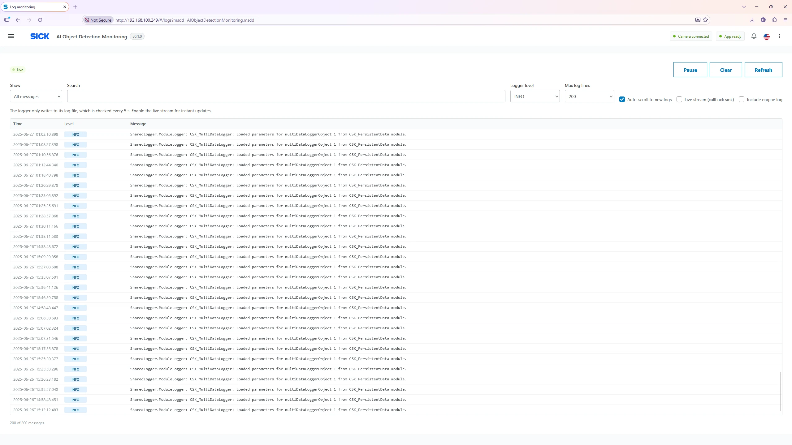
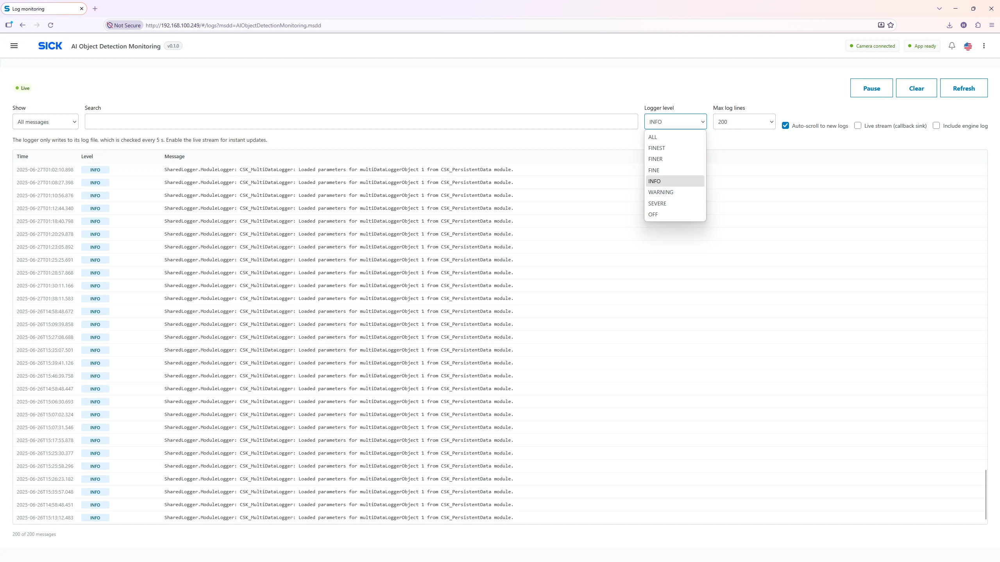
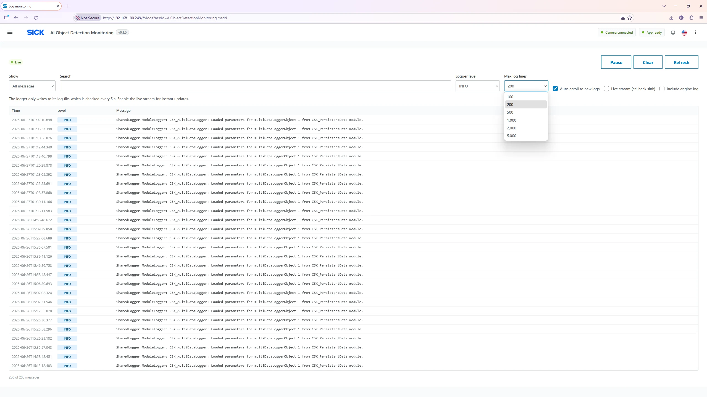

Operations & diagnostics
Log Monitoring Page
Follow the camera application’s diagnostic messages while investigating connections, model loading, license state and operational issues.

Toolbar and expected behavior
| Control | Meaning |
|---|---|
| Live / Paused | Shows whether the browser display is following new log messages. |
| Pause / Resume | Freeze/unfreeze the current visible log list. Pause does not stop processing or logging on the camera. |
| Clear | Clear the entries displayed in this browser session; it does not delete the device log file. |
| Refresh | Read current device logger parameters again and request updated information. |
| Show | Filter entries to All, Info and above, Warning and above or Error and above. |
| Search | Find text in displayed timestamp, level or message; filtering is local to the browser view. |
| Device level | Sets the CSK device logger threshold; changing this affects future logging volume on the device. |
| Maximum lines | Browser buffer limit: 100, 200, 500, 1,000, 2,000 or 5,000 displayed lines. |
| Auto-scroll / Jump to latest | Follow incoming entries or return to the newest line after scrolling up. |
| Live stream | Toggles the logger callback output used for real-time display. |
| Engine logger | Toggles attachment to the device engine logger; service-engineer option. |
How to diagnose an error
- Choose Show → Warning or Error to reduce noise.
- Enable live stream; confirm new log lines appear. File polling can occur at approximately 5-second intervals when the live callback is not available.
- Reproduce the reported issue once, and observe the time, severity and message.
- Use Search to locate the model, license, camera, MQTT or configuration message.
- Share the exact time and error message with support; switch Device level back to an appropriate production value after debugging.


Log severities
| Level | Typical use |
|---|---|
| ERROR / SEVERE | Critical failure that usually needs intervention. |
| WARNING | Unexpected condition or possible issue; inference or communication might still continue. |
| INFO | Normal operational events and state changes; commonly recommended for production. |
| DEBUG / FINE / FINER / FINEST | More detailed diagnostics, potentially high volume; use during targeted investigation. |
Level thresholds are inclusive: selecting INFO generally allows INFO, WARNING and ERROR; selecting WARNING allows WARNING and ERROR. The browser Show filter is distinct from Device level: filtering does not make the device produce additional messages.